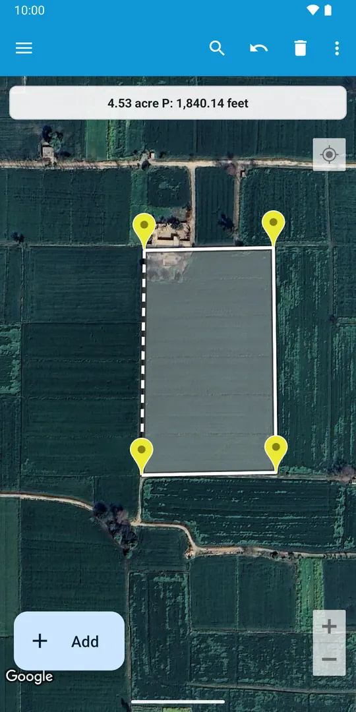
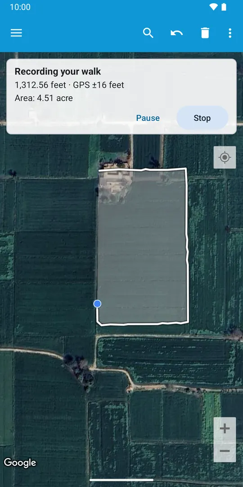
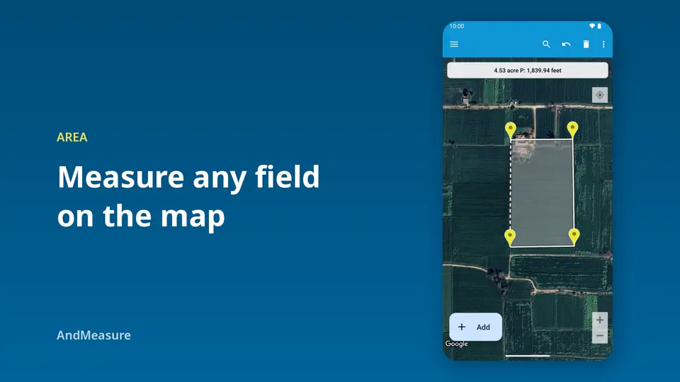
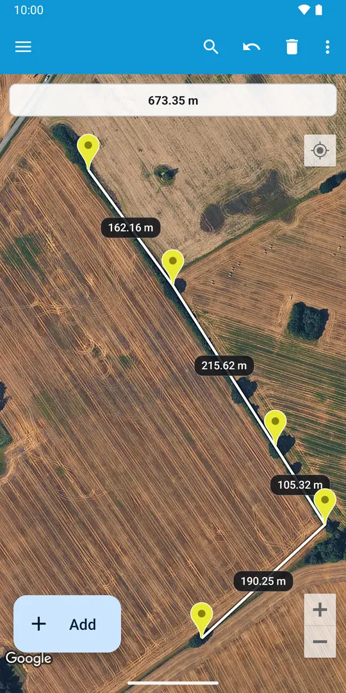
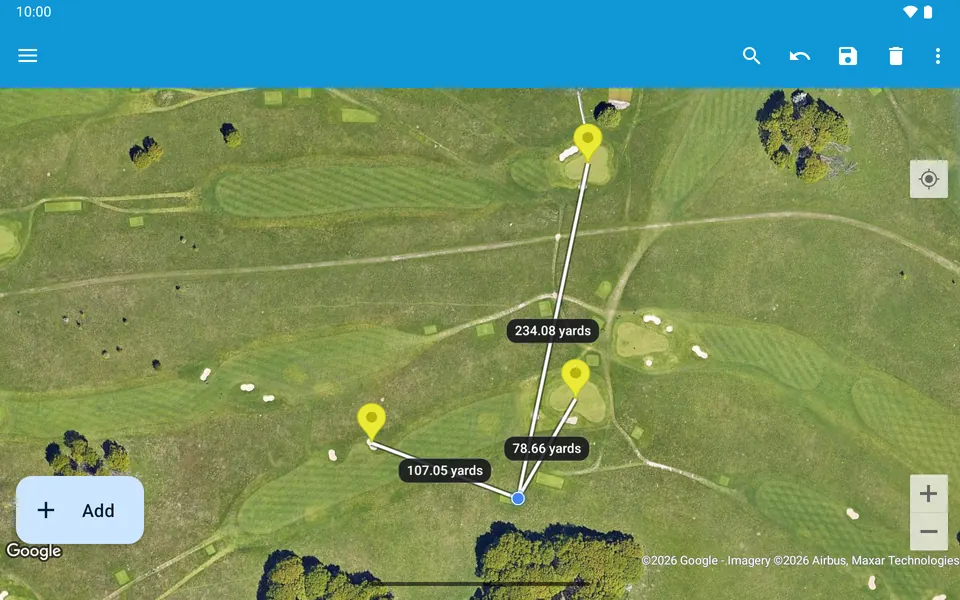
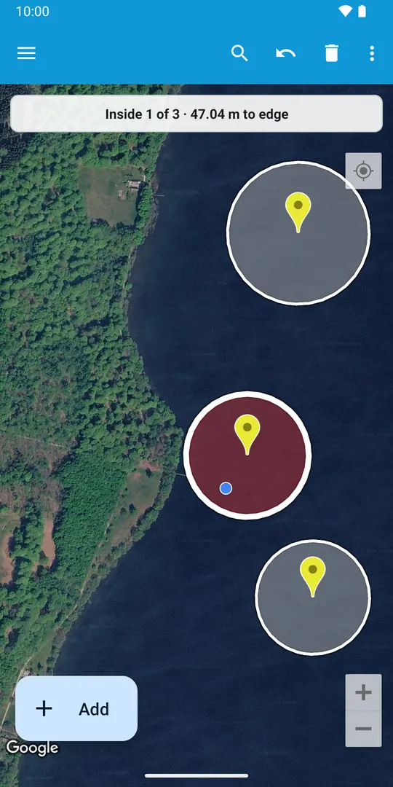
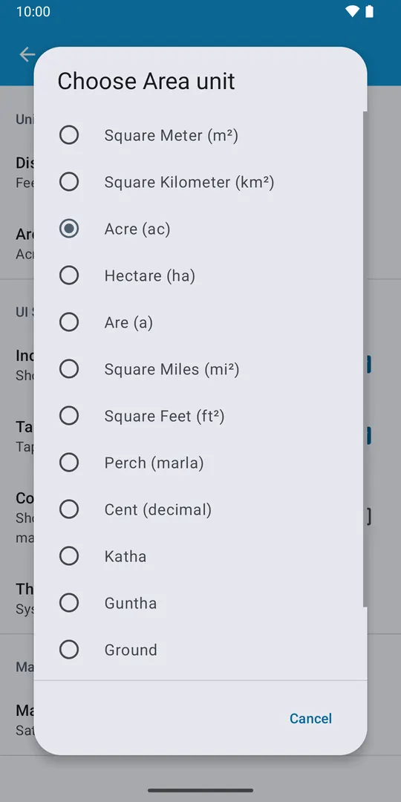
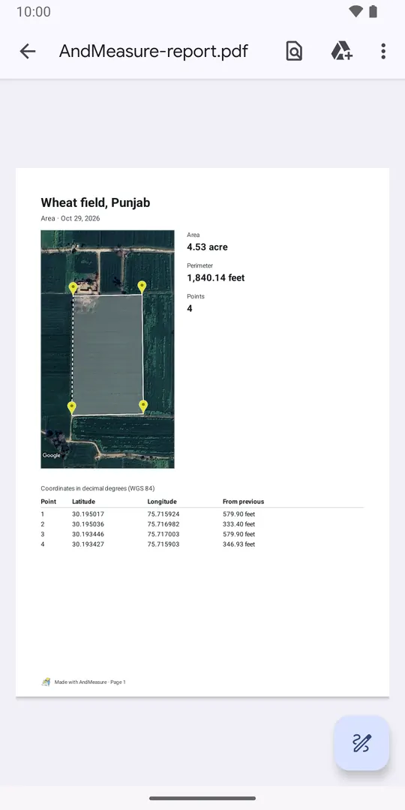

Land area and distance app for Android
Measure any field, plot or lawn on the map
Tap the corners on the satellite map, or walk round the edge with GPS. AndMeasure gives the area in acres, hectares, bigha, guntha, kanal and more, and the length of every side.


- No account to create
- Your location is used on your phone only
- 15 area units, local ones by name
- In English, हिन्दी, বাংলা, தமிழ், සිංහල and မြန်မာ
See it in a minute
A field measured on the map, then walked with GPS, a fence line, live golf distances, zones on a lake and a PDF report.

Five ways to measure
Pick a mode in the menu. Each one starts with a short hint on the map, so you know what to tap.
Tap the corners. Get the area.
Put a point on each corner of the field on the satellite map, or drag one from the Add button to place it exactly. The area and perimeter update as you go, with the length of every side on the map.
Good for a farm field before sowing, a plot of land, a lawn, a driveway or a roof.
Walk or drive the edge. GPS records it.
Tap Walk, then Start, and go round the field on foot, on a tractor or in a car. It keeps recording with the screen off. At Stop you get the area, with an estimate of how exact it is.
For fields where the satellite picture is old, or the edge is hard to see from above.
The length of every line
Draw a line through as many points as you like: a fence, a hedge, a pipe, a walking route. Each stretch is labelled on the map and the total sits at the top.
In meters, kilometers, feet, yards, miles or nautical miles.

Live distances from where you stand
Mark the spots that matter, like the green, a bunker or a tree, and the lines follow you as you move. On the golf course, the yardage to each one is always up to date.

Know when you are inside a zone
Put circles of any radius on the map. AndMeasure shows whether you are inside one and how far it is to the edge, and buzzes when you cross it.
For fishing zones, spraying buffers, or keeping a safe distance from a site.

Your land units, by name
Choose the unit people use where you are. The app names them in your language.
- bigha (Bangladesh, West Bengal)
- guntha
- kanal
- perch (marla)
- cent (decimal)
- katha
- ground
- acre
- hectare
- are
- m²
- km²
- ft²
- yd²
- mi²
Distances
Meters, kilometers, feet, yards, miles and nautical miles.


Save it, share it, send a report
Save a measurement with a name and a map picture, and open it again later. Share it as a picture, as a CSV file, as KML for Google Earth, or as a PDF report with the map, the side lengths and the corner coordinates, ready to send to a client.
- PDF report
- CSV
- KML
- Picture
Free to use. Pro once, no subscription.
Everything you need to measure is free. Pro adds the tools for work, for one payment through Google Play.
Free
No time limit
- Area, Distance and Continuous modes
- All units and all six languages
- Satellite, hybrid, terrain and normal maps, and place search
- Share as picture, CSV and KML
- Save 2 measurements
- Try one walk, one PDF report and one day of Circles
Pro
One payment, in your own currency on Google Play
- Walk the boundary with GPS
- Circles mode, with a buzz when you cross an edge
- Unlimited saved measurements
- PDF reports
- Your choice of marker color and icon
- New Pro features as they arrive
Everything that was free stays free.
Questions
How exact is it?
As exact as your points. Tapping the corners on a sharp satellite picture is usually the most exact, because a phone's GPS is good to a few meters. After a walk, the app tells you how close the area is likely to be, so you know when to walk again or tap the corners instead.
Can I use it for a land sale or a legal boundary?
No. AndMeasure is not a surveying instrument. It is good for knowing the size of a field, planning work or pricing a job. For property boundaries, land sales and official documents, use a licensed surveyor or your official land records. See the terms of service.
What happens to my location?
It is used on your phone only, to show where you are, to measure as you walk and to tell you when you cross a circle. A walk is recorded only from the moment you tap Start until you tap Stop, with a notification the whole time. Your measurements are stored on your phone, and there is no account. Read the privacy policy.
Does it need the internet?
The map and place search come from Google Maps and need a connection. Your position comes from the phone's GPS.
Which languages?
English, Hindi, Bengali, Tamil, Sinhala and Burmese. The app follows your phone's language.